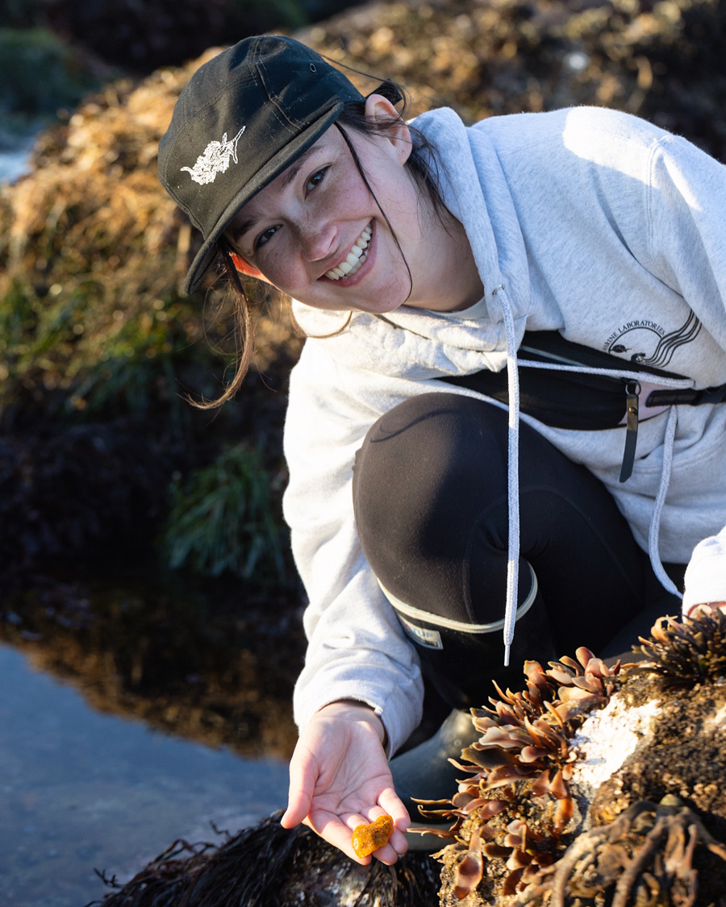
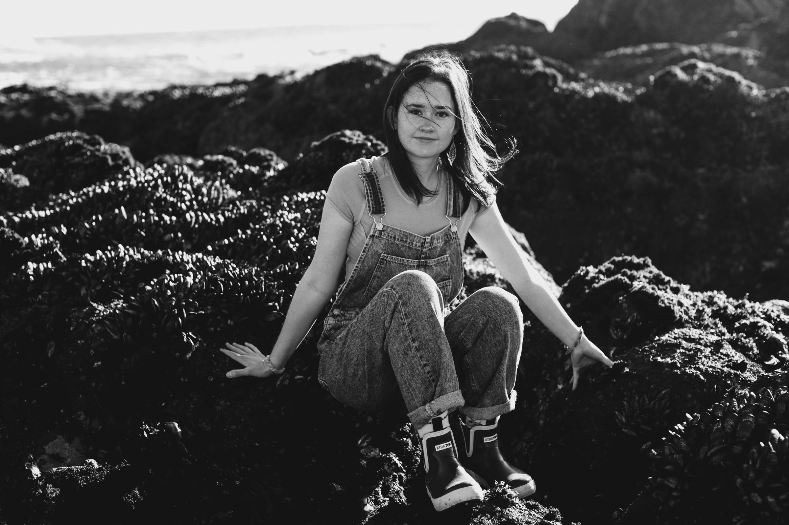

I'm just a Nudibranch Nerd


Madi McKay
Marine Biologist · Science Communicator · Tidepool Extraordinaire
Madi McKay is a marine biologist and science communicator combining art, science, and story to connect people with the marine environment. Based in Monterey, California, she has built a community of over one million curious learners and ocean stewards — and she's just getting started.
Get in Touch
Research
Kelp & Conservation
Madi is currently pursuing her master's degree at Moss Landing Marine Labs, where she uses drones to map and monitor bull kelp forests in Northern California. Alongside her thesis, she is actively involved in kelp restoration — using aquaculture to grow kelp for outplanting efforts to help recover one of the ocean's most vital ecosystems.


Community
1M+ Ocean Stewards
Madi is passionate about making conservation and restoration topics fun and easy to understand. Through educational videos across TikTok, Instagram, and YouTube, she has grown a community of over one million curious learners — people who now care deeply about the health of our oceans.
Field Work
From Antarctica to the Gulf of California
Madi's work has taken her across the globe. In Antarctica, she assisted Nat Geo storyteller Ami Vitale, documenting one of the world's most remote ecosystems. In the Gulf of California, she sailed aboard the historic Western Flyer — the very vessel John Steinbeck and Ed Ricketts made famous — to document its return and the science being conducted on board.

Looking Forward
What's Next
Madi is considering pursuing a PhD or continuing to work hands-on in the restoration of threatened species. Whichever path she takes, one thing is certain — she'll be bringing the ocean to you every step of the way.
Work with Madi